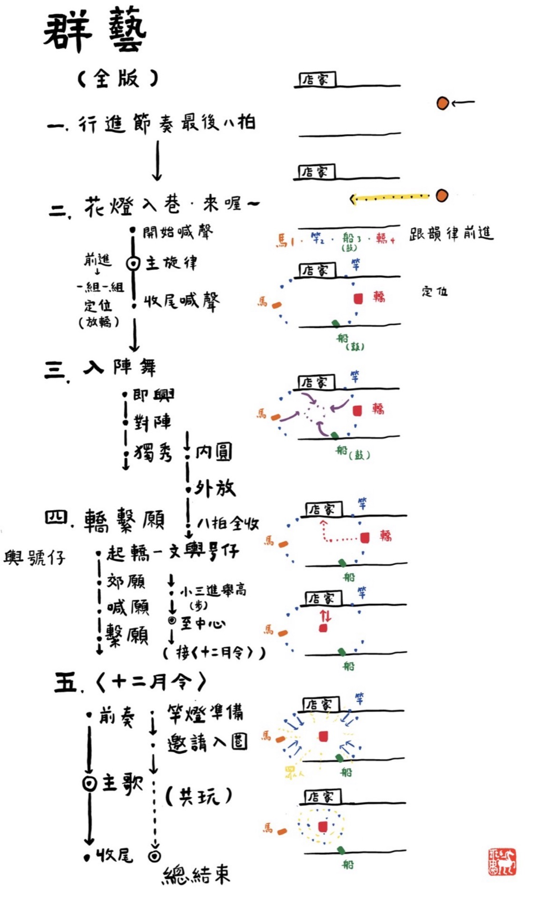
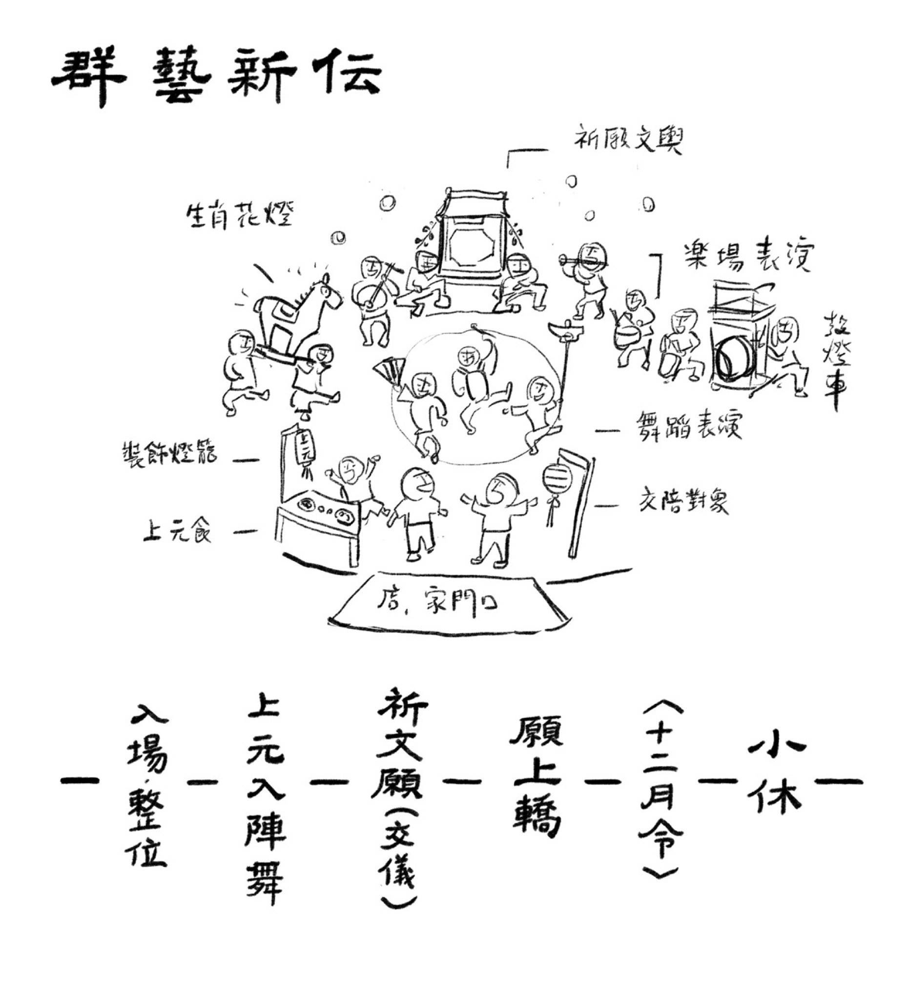
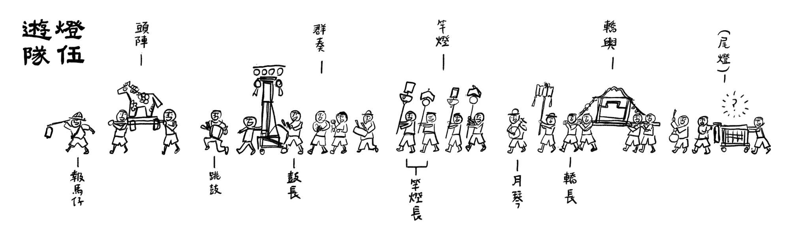
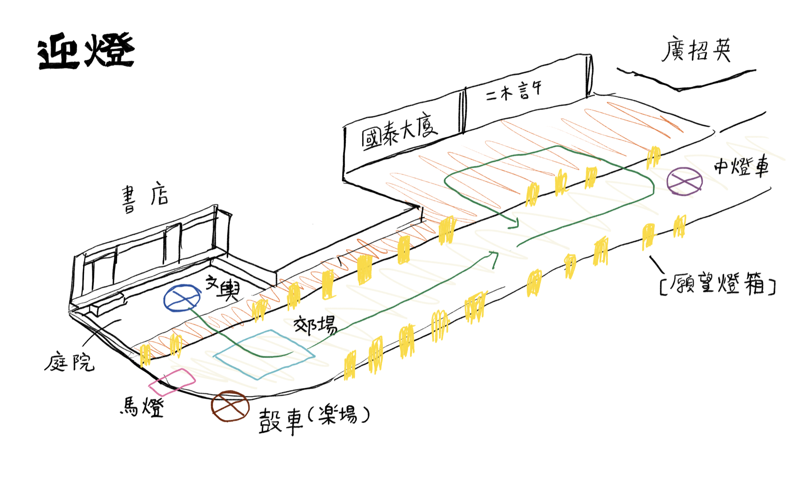
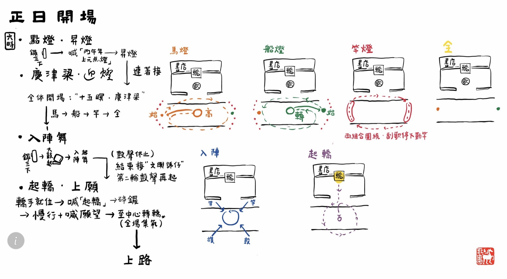
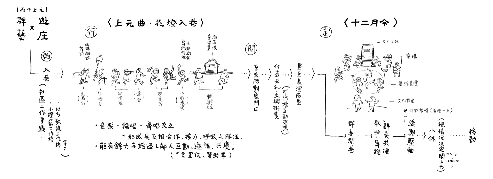
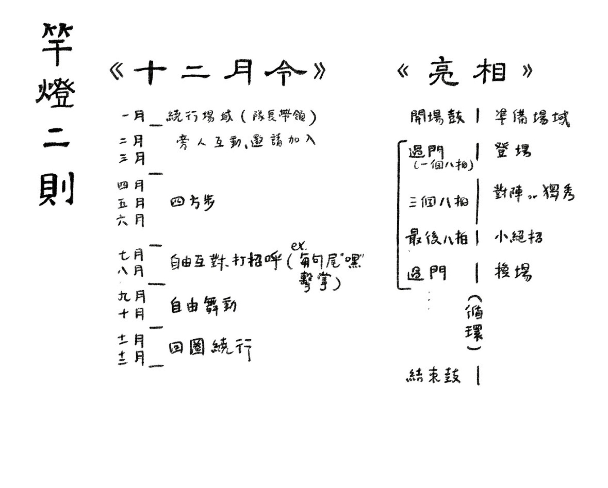
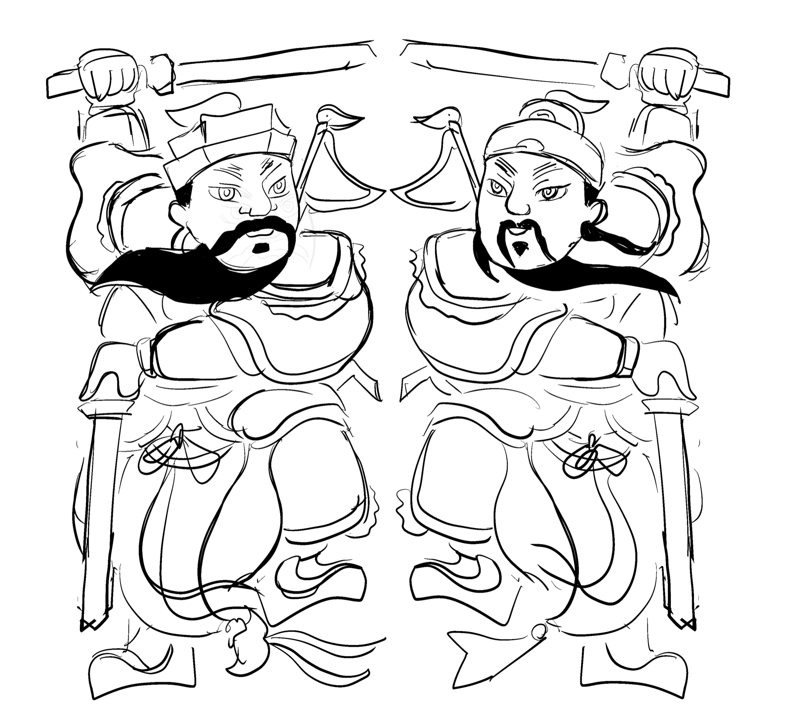
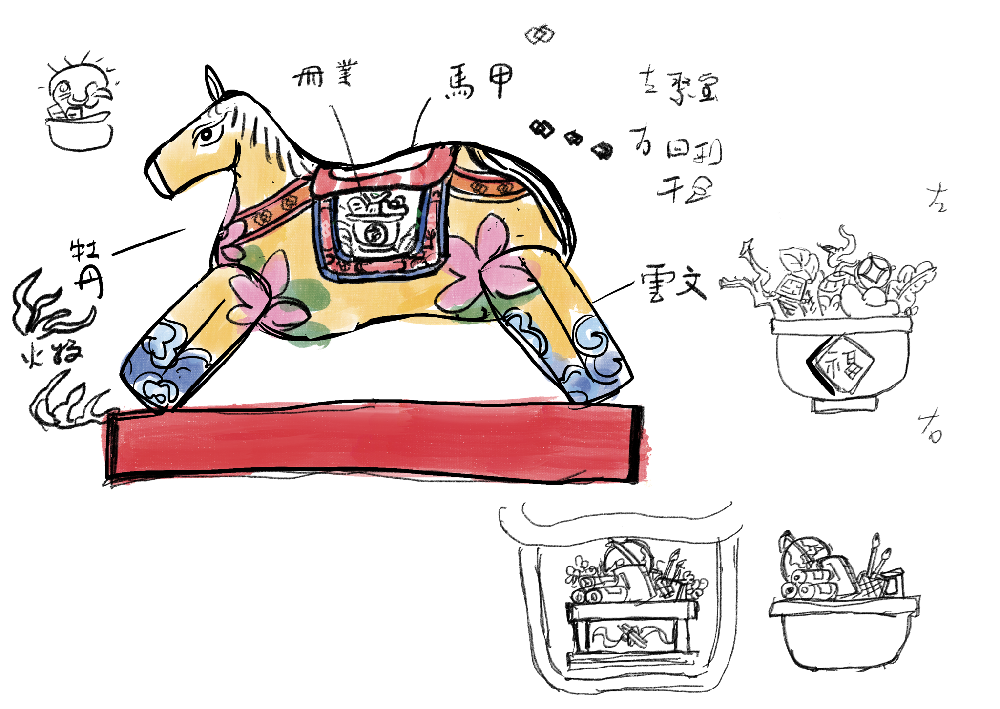
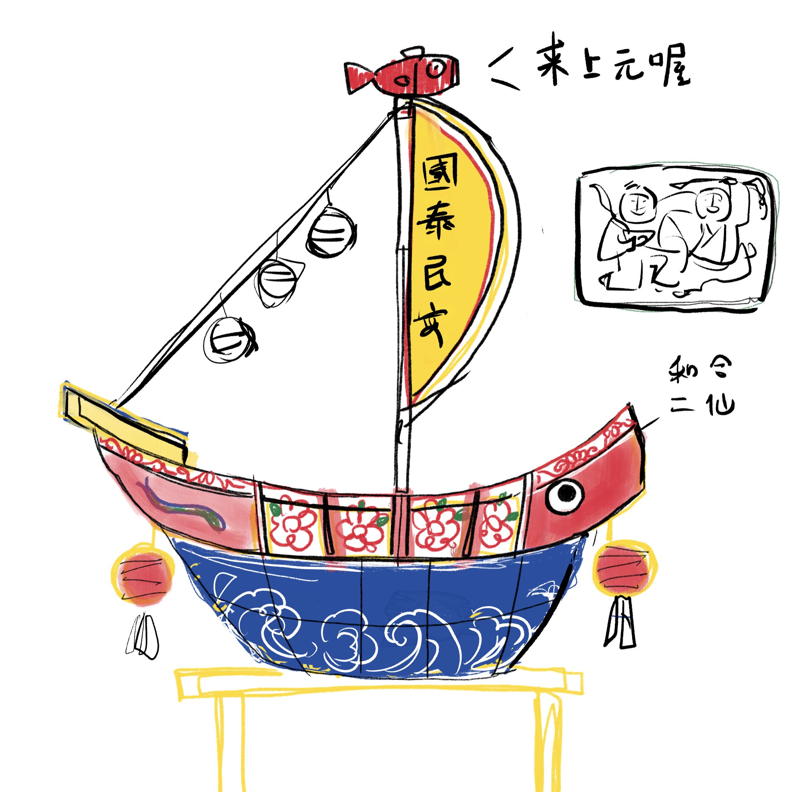

OVERVIEW
活動概覽

2026丙午上元，由莊逸軒發起，高雄「蟬雨越讀」獨立書店主辦。
現場紀錄
THEME
年度主題
交關，是一種單向度的認可或支持，而交陪，則是多元的交流與連結。
我們期待從今年開始，能逐漸發展「交陪」，藉由不同的互惠模式、資源流動的想像，創造出能讓藝術與鄰里產生更多互動的可能。
是以一步一步，讓上元的「復活」能回到生活，而不只有特定的舞台———舞台就能是自家門口。


交陪計畫之協作想像
- 響應張燈結綵
- 參與繫願望箋儀式
- 提供平安食、贊助燈火銀
- 創造「美」的交換現場（才藝表演）
PROGRAM
活動流程





TEAM
策劃團隊
建立上元的理念與想像，統整美學調性，帶領各組創作。
蟬雨書店主理人，負責對外公關聯繫、贊助募資與資源對接。
杏福巷子、梅琴洋行、丈引小院、嵐清音樂藝術工作室、博漢蔘業、有木田、瑞園食堂、春福、空腹蟲大酒家、醉魚、銀座聚場、新豐里長、新豐代天府、御書房、好椰、柴魚亭、九記食糖水、小樹的家、阿貴食堂、高雄市政府警察局苓雅分局、義交大隊、Gelatail五滴義式冰淇淋
王一帆、王鳳君、方宥鈞、何有廷、李耕豪、李雅菁、周美利、林美珍、林艾嘉、洪琮昱、侯佳榮、城珮慈、翁明輝、許瓊文、許棋禎、許立德、張圓媛、黃紋萍、黃雅芳、黃千芬、黃暘尊、黃羽彤、楊國煜、楊忠憲、趙慧如、陳淑芬、陳潔君、陳亮言、陳亮谷、蔡怡亭、簡秀芽、蘇千芳、吳南樺、三禾清豐、全心丼飯、阿貴食堂、香茗茶行、柴魚亭、新豐代天府、說給花聽花坊、欣律音樂藝術中心、林育生司機大哥、ARC專業燈光音響
陳塵、林亞彤
以及，參與小額募資的各位贊助者、書店客人！
和，無數在籌備過程給予協助的朋友、上街共同春鬧的市民們！
ARTWORK
創作內容



DISCOURSE
創作論述
← 點選左側文章標題
SCHEDULE
工作期程
O1・展望演出技藝
讓技藝在正日、遊庄中展現感動力
- ・〈入陣舞〉完成基礎架構並精進微調
- ・〈上街節奏〉群奏完成教學，Ｃ段現場確認
- ・轎輿達成正日 8 人規模，絕招練成
- ・〈慶津梁〉〈花燈入巷〉定案，配合月琴排練
O2・回顧裝置創作
以裝置承載丙午年沉澱與記憶
- ・馬燈、鼓車、文輿完成製作
- ・竿燈完成修補 12 支
- ・服裝定版並完成縫製
O3・深入社區共節慶
遊庄點燈在兩個社區落地
- ・左營遊庄（02/20）完成
- ・鹽埕遊庄（02/21）完成
- ・正日路線達成 3 個以上店家完整互動
O4・完成群藝新傳
素人透過課程習得技藝並上陣
- ・群奏、舞燈、跳鼓各完成 12 堂課
- ・課堂創作完成（詞曲、舞作）
- ・總彩排完成，跨組協作達成
COLLABORATORS
共同創作者視角
← 點選左側創作者姓名